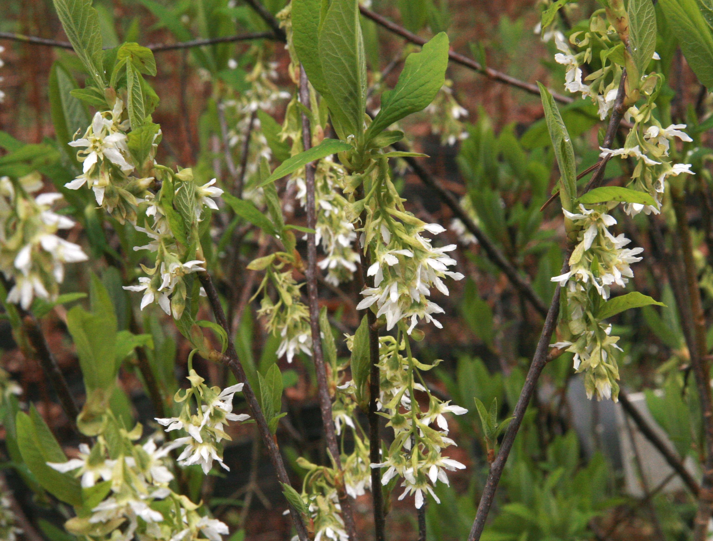
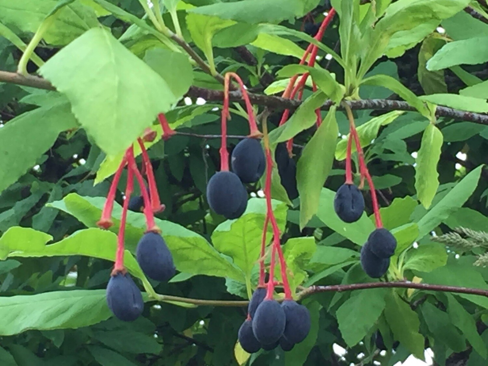

Wild/Indian Plum (Oemleria cerasiformis)
Fruit: smélhx̱wel, Bush: smelhx̱weláy̓


Planting
Wild/Indian Plum is a deciduous shrub that grows well in a variety of soil conditions. Here's how to plant wild plum:
- Choose a location with full sun or partial shade.
- Prepare the soil by removing weeds and loosening it.
- Dig a hole slightly larger than the root ball and place the plant in the hole.
- Backfill the hole with soil and gently firm it around the plant.
- Water the plant thoroughly after planting and keep the soil consistently moist.
Usage
Wild/Indian Plum has cultural and ecological significance:
- The berries of wild plum are edible and can be used in jams, jellies, and desserts.
- The plant has cultural importance and is used in traditional Indigenous ceremonies.
- Wild/Indian Plum provides food and habitat for birds, butterflies, and other wildlife.
Environmental Impact
Wild/Indian Plum contributes to the ecosystem in the following ways:
- The shrub provides early-season nectar for pollinators.
- Wild/Indian Plum supports biodiversity by attracting a variety of bird species.
- The plant helps stabilize soils and prevents erosion in riparian areas.